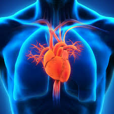
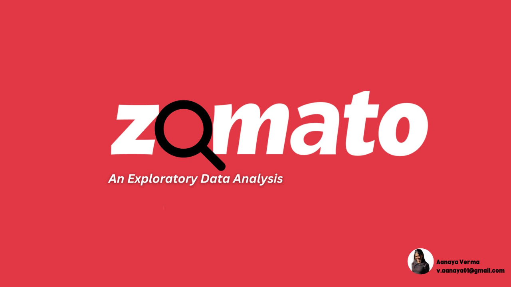
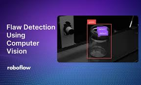

Hi, I'm M. Hariharan
I'm a Data Analyst
B.Tech student at VIT Chennai passionate about turning raw data into actionable insights. Experienced with Python, SQL, and Power BI through real-world internships at Samsung R&D and Southern Railways.
.jpeg)
B.Tech student at VIT Chennai passionate about turning raw data into actionable insights. Experienced with Python, SQL, and Power BI through real-world internships at Samsung R&D and Southern Railways.


![Cricket Best XI Analysis Dashboard displaying player statistics and performance metrics. The dashboard shows a dark blue interface with player analysis section featuring tabs for Player Analysis and Final 11. A data table displays middle order batsmen with columns for Name, Team, Batting Style, Innings Batted, Runs, Balls Faced, Strike Rate, Batting Average, Batting Position, and Boundary Percentage. Players listed include Lorcan Tucker, Suryakumar Yadav, Virat Kohli, Glenn Phillips, and Daryl Mitchell with their respective statistics shown in pink-highlighted bars. Below the table are multiple visualizations including bar charts showing strike rate and average balls faced trends, and a scatter plot analyzing the relationship between batting average and strike rate. The interface includes filter buttons and interactive Power BI visualization tools, presenting a comprehensive analytical dashboard for cricket player performance evaluation.](Crciket.png)

Ready to collaborate on data projects? Whether you have a challenge to solve or an opportunity to discuss — I'd love to connect!